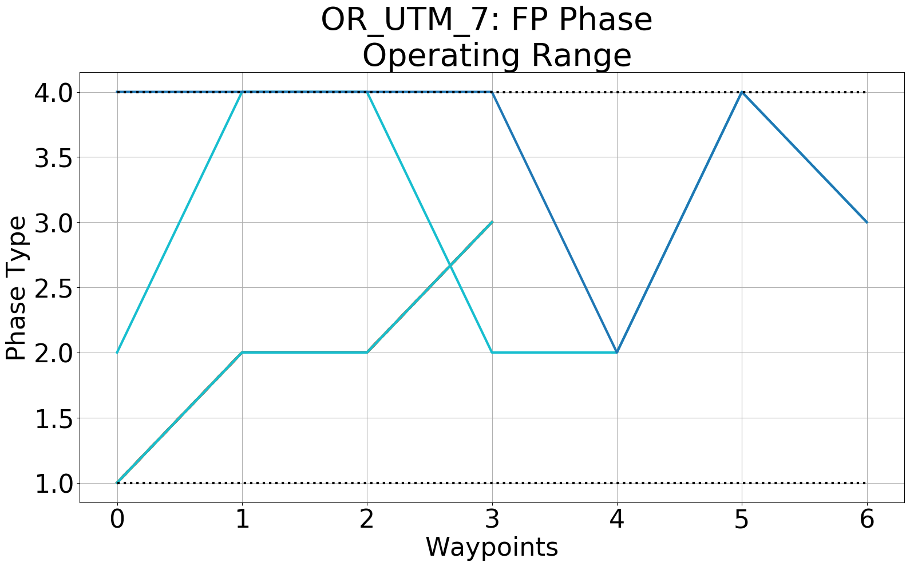
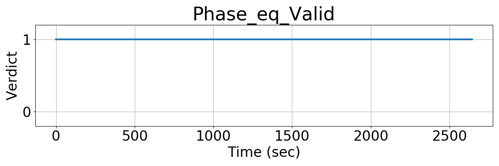
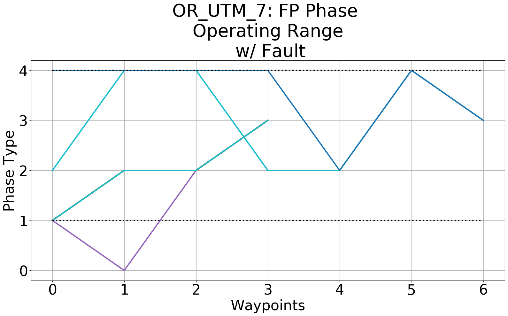
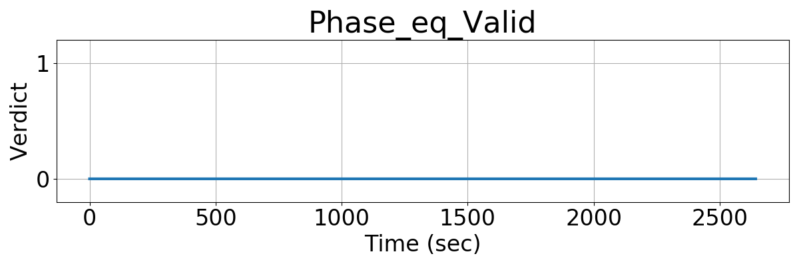

Integrating Runtime Verification into an
Automated UAS Traffic Management System
Matthew Cauwels, Abigail Hammer, Benjamin Hertz, Phillip H. Jones, Kristin Y. Rozier
This webpage contains supplementary specifications for "Integrating Runtime Verification into an
Automated UAS Traffic Management System" by M. Cauwels, A. Hammer, B. Hertz, P. H. Jones, and K. Y. Rozier
OR_UTM_7
Specification Description
The Phase of any flight plan must be either: (1) START, (2) STOP, (3) HOME, or (4) CRUISE.
Signals Required
Phase
Boolean Conversion of Signals to Atomic Inputs
Phase_eq_Valid = 1;
for(i = 0; i < NumUAS; i++)
{
for(j = 0; j < NumWp; j++)
{
// if UAS i's flight plan's Phase, an integer, is 1, 2, 3, or 4
// and both values are not "nan"
if((Phase[i][j] > 0) && (Phase[i][j] < 5) && (Phase[j][i] == Phase[j][i]))
{
Phase_eq_Valid = 0;
}
}
}
MLTL Specification
Original: Phase_eq_Valid
Fault Explanation
The Phase (type of waypoint) is not valid. Only START, STOP, HOME, and CRUISE waypoints are valid waypoints in the current implementation of this UTM.
Additional Notes
Figures



